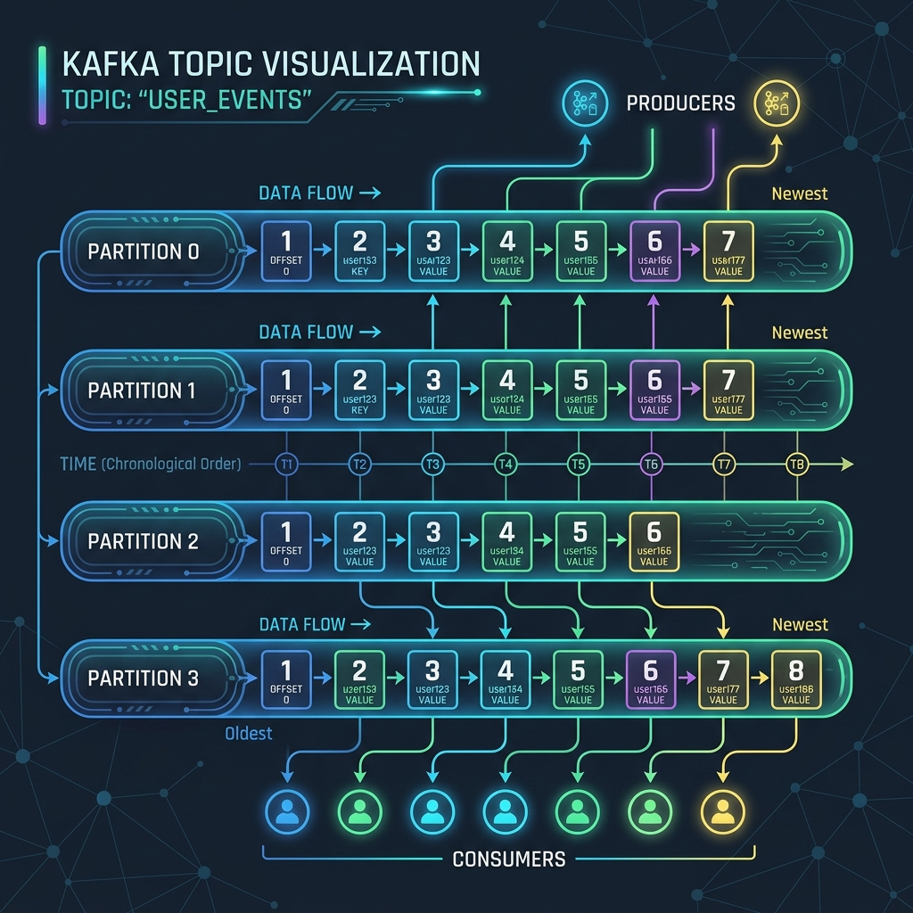

In Apache Kafka, data is stored in categories called Topics. But if Kafka stored an entire topic on a single server, it would quickly run out of space and hit performance limits. To solve this, Kafka splits topics into smaller units called Partitions.
Partitions are the secret sauce behind Kafka's massive scale, horizontal parallelism, and high throughput. Let's look at how topics and partitions work under the hood, and how messages are routed to them.

Imagine a busy supermarket (Topic):
If there was only one checkout lane (a single partition), the line would stretch out the door and slow down the entire store, no matter how fast the cashier worked.
Instead, the store opens 10 checkout lanes (10 partitions). Now, 10 customers can pay at the same time, speeding up the checkout process significantly. If a group of shoppers want to ensure they finish in their exact arriving order, they must all use the same checkout lane.
How Partitioning Mechanics Work
When you send a message (a record) to a Kafka topic, the producer must decide which partition to route it to. Kafka uses two main strategies for routing:
1. Key-Based Routing (For Ordering Guarantees)
If you attach a key to your message (such as a customerId or orderId), Kafka hashes this key using a hashing algorithm (by default, MurmurHash2) and performs a modulo operation against the total number of partitions:
// Inside Kafka's Default Partitioner
int partition = Math.abs(Utils.murmur2(keyBytes)) % numPartitions;Because the hashing calculation is consistent, messages with the same key will always go to the same partition. This is critical because Kafka only guarantees message ordering within a single partition. If you need all events for customer #1234 to be processed in order, sending them with the same key ensures they sit sequentially in the same partition.
2. Round-Robin / Sticky Routing (For Load Balancing)
If your message has no key (set to null), Kafka routes messages to distribute the load evenly across all partitions. In older versions, it used a basic round-robin technique. In modern versions, it uses a Sticky Partitioner which fills a batch of messages for one partition before moving to the next, optimizing network efficiency.
Creating Topics in Java
You can create topics programmatically using the AdminClient API. When creating a topic, you specify the name, partition count, and replication factor:
import org.apache.kafka.clients.admin.AdminClient;
import org.apache.kafka.clients.admin.NewTopic;
import java.util.Collections;
import java.util.Properties;
Properties config = new Properties();
config.put("bootstrap.servers", "localhost:9092");
try (AdminClient adminClient = AdminClient.create(config)) {
// Create topic "orders" with 3 partitions and a replication factor of 2
NewTopic newTopic = new NewTopic("orders", 3, (short) 2);
adminClient.createTopics(Collections.singletonList(newTopic)).all().get();
System.out.println("Topic created successfully!");
} catch (Exception e) {
e.printStackTrace();
}Crucial Rule: You Cannot Decrease Partitions
While Kafka allows you to increase the number of partitions for a topic on the fly, you cannot decrease them. Decreasing partitions would require deleting files and re-sorting active records, which Kafka does not support. Keep in mind that increasing partition counts mid-way will alter the key-to-partition hashing mapping, breaking partition-level ordering for future messages with existing keys.
Conclusion
Partitions allow Apache Kafka to scale horizontally. By spreading partition files across different brokers, Kafka handles massive amounts of read and write traffic. Just remember to choose your message keys carefully to balance data across partitions while preserving essential execution orders.